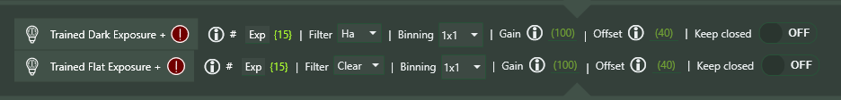
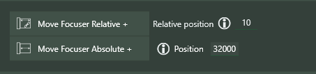

Enhanced Instructions
Enhanced Instructions are built-in NINA instructions that have been enhanced to allow the use of Expressions. These instructions take the name of the existing NINA instruction and put a plus-sign (+) at the end. More instructions will be enhanced in the future.
Take Exposure +, Take Many Exposures +, and Smart Exposure +
These imaging instructions allow Expressions for number of exposures, exposure time, gain, offset, and dither. In the examples below, the Constants used are defined elsewhere. Note: Filter, and binning are planned for the future.

Trained Flat Exposure +, Trained Dark Flat Exposure +
These imaging instructions allow Expressions for number of exposures, gain, and offset. In the examples below, the Constants used are defined elsewhere.

Cool Camera +
This instruction can use Expressions both for the set temperature and duration.

Move Focuser Relative + / Move Focuser Absolute +

Switch Filter +
Allows use of an Expression to specify a filter. Note that filter names are represented by Filter_filterName, where filterName is the name of a filter without spaces or other punctuation.
Move Rotator Mechanical +
Use an Expression to specify a mechanical rotator angle.
Slew to RA/Dec, Slew to RA/Dec and Center +, Slew to Alt/Az
Slew to RA/Dec (or Alt/Az) using an Expression to specify decimal coordinates, and (optionally) center.

Smart Subframe Exposure +
This is an enhancement to Smart Exposure + in which a subframe can be specified. There are two options - ROI % or Dimensions, as shown below. Note that a warning will be shown if the connected camera does not support subframe exposures.
External Script +
This is fully documented elsewhere in this document.
Wait for Time Span +
Allows use of an Expression to specify a wait time (in seconds)

Annotation +
This instruction allows the use of Expressions within the annotation; each Expression must be surrounded by {}'s.